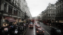
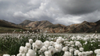
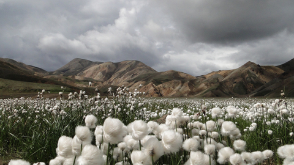

壁紙化：ネットで拾った背景用画像 その３
ネットで拾った写真を拡大縮小＆カットで 1920x1080 壁紙にした。 National Geographics にあったものや 2ch まとめ系や NAVER、あと読んでる個人の Twitter や Tumblr から拾ったものなんかもある。それらは結構な枚数があるので何回かにわけて紹介していく。カットする関係で見映えのバランスからロゴ部分は落としてしまうことが多いが、別に正体を不明にする意図はない。なお、画像のファイル名は私が勝手に付けていて元の題を反映していない。 今回は、その２ほどではないが、私が少しメッセージ性を感じる写真を集めている。

なお、この個別ページは検索よけのメタタグを設定しており、検索よけしてないブログトップやカテゴリトップでは、本体へのリンクのない極小画像しか表示されない配慮をしている。その上で、できるだけ公式なサイトへのリンクをし、ブログ主本人によるリファラ付きのクリックを一度はしている。(これらの点について《デスクトップ壁紙公開についてのこのサイトのポリシー》で少し詳しい説明をしてある。) ここに貼付した縮小画像そのものは「引用」の範囲に留まると私は思っているが、出所明示を欠いている。出所は今となっては不明なものが多く、その点はGoogle の画像で検索等が使えればいいのだが、カットしてたりするので、うまく検索できないかもしれない。カット前の画像は探せば残っているはずなので、必要な方は申し出ていただければ「同好の士という枠で個人的に」元画像を渡すことはできると思う。 ここより下に貼ってある縮小画像をクリックすると、大きな壁紙がダウンロードされるはず。(一日100枚以上のダウンロードがあったあとなど、しばらくダウンロード用リンクが停止されることがあります。そうなっていたら、すみません。) ■coffee.jpg 元のファイル名は 7dc2a306.jpg で 1920x1080 の大きさ。 ■London.jpg 元のファイル名は 27653_1600x1200-wallpaper-cb1287607428.jpg で 1620x1200 の大きさで National Geographic Photograph by Normunds Spakovskis のロゴが付いていた。 ■star_light_tokyo.jpg 元のファイル名は zipyaru-20091229-09-00023.jpg で 1275x722 の大きさ。 ■cotton_field.jpg
元のファイル名は 28212_1600x1200-wallpaper-cb1288648425.jpg で 1620x1200 の大きさで National Geographic Photograph by Jennifer Jesse のロゴが付いていた。 ■big_little_girl_doll.jpg 元のファイル名は eba9a0c0.jpg で 1024x768 の大きさ。 ■greek_shop.jpg 元のファイル名は 26796_1600x1200-wallpaper-cb1287602010.jpg で 1620x1200 の大きさで National Geographic Photograph by Deborah Brooks のロゴが付いていた。 今回は、自分で撮影したものは含まれていない。 更新：2014-01-30 初公開：2014年01月30日 18:07:57 最新版：2014年07月18日 10:03:11 Comments: [E:sharp] 更新：ダウンロードしたときの元のファイル名とそのファイルの大きさを調べ書き足した。 投稿: JRF | 2014-07-18 10:08:08 (JST) Links: National Geographics: http://nationalgeographic.jp/ 2ch: http://www.2ch.net/ NAVER: http://matome.naver.jp/ Twitter: https://twitter.com/ Tumblr: http://www.tumblr.com/ デスクトップ壁紙公開についてのこのサイトのポリシー: http://jrf.cocolog-nifty.com/column/2013/09/post.html Google の画像で検索: http://www.google.co.jp/insidesearch/searchbyimage.html